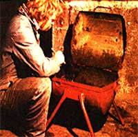
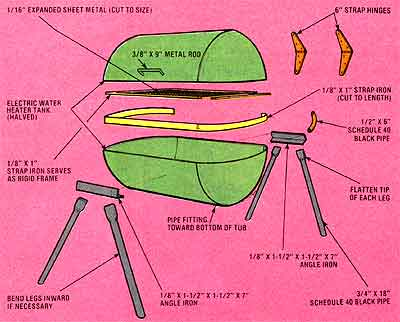
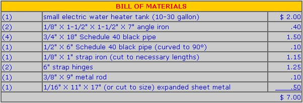

In about an hour, you can whip up an indispensable (and inexpensive!) workshop helper.
Here's a welcome addition to any handyman's or handywoman's shop: a sturdy little cleaning tub . . . that you can make in about an hour's time. It's nothing more than an electric water heater tank split across the middle, hinged, and mounted on a set of legs . . . but this simple container will hold its own against any expensive, commercially available cleaning tray you might care to match it up with!
Start the project by scrounging or buying a hot water tank at your local appliance store, scrap-iron yard, or landfill (a small, electrically heated unit is what you should look for). Cut the vessel in half-lengthwise, as shown-with a gas torch or a saber saw. (If possible, make your incision strategically in order to position one of the container's threaded pipe fittings at the bottom of the completed tub, where it can serve as a drain hole.)
Next, file any rough edges smooth, then weld one piece of angle iron to each side of the lower portion of the tub . . . centered approximately two inches from-and parallel to -the lengthwise cut. Fasten these sections of angle with their "spines" facing outward. (NOTE: If you don't have a welder or can't use one, you needn't stop reading: This same tub can be bolted together . . . and the final result will be every bit as good!)
Now flatten three inches on one end of each of the four pipe legs, and weld them in pairs to the smooth upper face of each length of angle iron . . . being sure that their lower tips are even with the ends of the tank. (Because of the position of the angle iron, you might want to bend the legs inward to prevent excessive splaying to the front and rear of the tub.)
Once the supports have been attached to your satisfaction, take your length of strap iron and cut a section long enough to extend around the front side and both ends of the tank, bend the strip to shape, and weld it onto the lower part of the container . . . leaving a 1/2" lip of strap metal above the cut. Place the top half of the tank within this lip, check for a flush fit, and then weld the strap hinges to both sections of the tub.
You'll need a handle, so bend your piece of metal rod into a flattened "U"shape . . . and weld it to the front of the container's lid. Then, to prevent the cover from flopping over backward (and possibly damaging the hinges), bend a 6" length of 1/2" pipe into a 90° curve, and fasten it to the section of angle iron at the rear of the tub (you might have to adjust this stop slightly to achieve the desired results).
At this point, you may want to fabricate a drying screen from a section of expanded sheet metal: Just cut the material into a rectangular shape (so it can either be set into the bottom of the tank or turned and rested on the tub's edges), and tack a strap iron frame around its border. Once that's done, scrub the container inside and out with a stiff wire brush, and paint its exterior the color of your choice.
Now plug the drain hole (if your tub has one), fill the container's lower half with kerosene or your favorite cleaning solvent, and you're all set. You'll find that this little gem is not only convenient, but will prevent many a potentially messy situation . . . and the tank is large and stout enough to hold even automobile cylinder heads. When you're done cleaning, merely close the lid over the works, and the solvent will remain unevaporated (which makes MOTHER's tank a natural for soaking parts and tools, too!).
|
 |
 |
 |